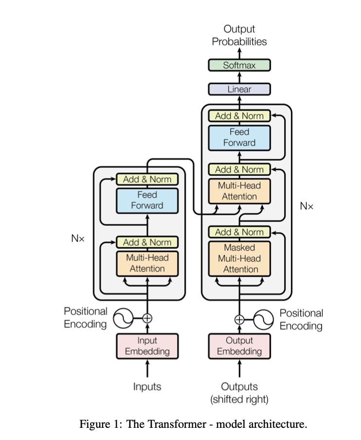
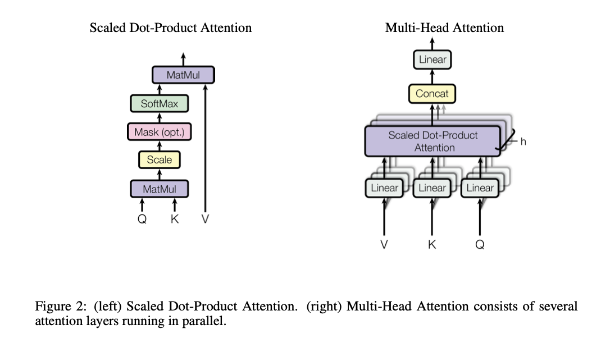

Transformer¶
- Paper: https://arxiv.org/abs/1706.03762 (Vaswani et al., 2017, Attention Is All You Need)
- Original code (Tensor2Tensor): https://github.com/tensorflow/tensor2tensor
Scope note: we focus on techniques relevant to modern LLMs (primarily decoder-only / autoregressive Transformers); encoder-only architectures (e.g., BERT) and purely supervised encoder models are out of scope here.
What is the model? (Mathematical representation)¶
In standard NLP usage, you plug the Transformer into a familiar likelihood:
Conditional sequence modeling (seq2seq / translation)¶
- Definition (seq2seq): https://en.wikipedia.org/wiki/Seq2seq
Given a source sequence \(x\) and a target sequence \(y = (y_1, \ldots, y_T)\), we model
Training is maximum likelihood (cross-entropy) with teacher forcing:
Autoregressive language modeling (decoder-only)¶
If there is no conditioning input \(x\), the same factorization becomes
This is the “AR” view: the Transformer block is just a parameterization of the conditional distributions via masked self-attention.
Discussion¶
- No explicit latent probabilistic state: unlike classical sequence models such as HMMs or state-space/Markov processes, the standard Transformer LM does not introduce a stochastic hidden state \(z_t\) with an explicit transition \(p(z_t\mid z_{t-1})\). The “hidden states” in a Transformer are deterministic neural representations produced by forward computation, so there is no marginalization/inference over latent variables in the probabilistic formulation.
- Truncation is usually practical, not theoretical: the chain-rule factorization conditions on the entire prefix \(y_{<t}\) in principle. In practice, models operate under a finite context window (and sometimes additional approximations such as sparse/blocked attention or external memory), which effectively limits what information the model can condition on.
- Decoding choices: implementations often expose top-\(k\) (or top-\(p\)) sampling, applied at the final next-token distribution (logits/softmax); this usually does not reduce the forward-pass compute per step, but can simplify the sampling step by restricting to a subset of the vocabulary.
- Beam search: an alternative decoding procedure that keeps multiple partial hypotheses and selects the highest-scoring sequence under the model, rather than sampling a single next token.
- Why self-attention matters next: self-attention is the key computation that constructs a context-dependent representation of the prefix, which is then used to parameterize each conditional distribution \(p_\theta(y_t\mid \cdot)\).
Attention / Self-Attention / Multi-Head¶
Scaled dot-product attention¶
Attention takes queries \(Q\), keys \(K\), values \(V\), and returns a weighted sum of values. The weights are content-dependent similarities between queries and keys.
- \(d_k\) is the key/query dimension per head.
- \(M\) is an additive mask (typically \(0\) for allowed positions and \(-\infty\) for disallowed ones). For decoder-only LLMs, \(M\) encodes the causal constraint “do not attend to the future”.

Self-attention vs cross-attention¶
- Self-attention: \(Q,K,V\) are all computed from the same sequence representation \(X\).
- Cross-attention (encoder-decoder): \(Q\) comes from the decoder states, while \(K,V\) come from the encoder outputs.
In practice you form \(Q,K,V\) by learned linear projections, e.g. \(Q = XW_Q\), \(K = XW_K\), \(V = XW_V\).
Why the \(1/\sqrt{d_k}\) scale?¶
Without scaling, the dot products \(QK^\top\) tend to grow with \(d_k\), pushing softmax into saturation and making optimization harder. The scale roughly stabilizes the magnitude.
A common (approximate) variance argument is:
Assume components are roughly zero-mean with unit variance and weakly correlated, e.g. \(q_i, k_i\) behave like i.i.d. with \(\mathbb{E}[q_i]=\mathbb{E}[k_i]=0\), \(\mathrm{Var}(q_i)=\mathrm{Var}(k_i)=1\). Then \(\mathbb{E}[q_i k_i]=0\) and
So \(s\) has typical scale \(\sqrt{d_k}\). Dividing by \(\sqrt{d_k}\) makes the logits fed to softmax stay \(\mathcal{O}(1)\):
This is not a fully rigorous derivation (the learned projections and LayerNorm change the exact statistics), but it explains why scaling helps: it reduces softmax saturation and keeps gradients healthier.
Concrete example: if \(d_k=64\), the unscaled dot-product has a typical magnitude around \(\sqrt{64}=8\). Softmax over numbers with magnitude \(\sim 8\) can become very peaky early in training; scaling brings those logits back to a gentler range.
How to “kill” the \(\sqrt{d_k}\) (where to put the scale)¶
You can’t really make the \(\sqrt{d_k}\) issue disappear; you can only move the scale so the attention logits stay \(\mathcal{O}(1)\). The standard choice is the explicit \(1/\sqrt{d_k}\), but there are equivalent alternatives:
-
Use an explicit (possibly learnable) temperature: \(\mathrm{softmax}((QK^T)\cdot \alpha + M)V\), where \(\alpha\) is a scalar (or per-head scalar). Initialize \(\alpha=1/\sqrt{d_k}\). Some implementations keep \(\alpha\) fixed; others learn it (a learnable “temperature” \(τ\)).
-
Normalize queries/keys (cosine attention): replace \(q,k\) with \(\hat q=q/\|q\|\) and \(\hat k=k/\|k\|\). Then \(\hat q\cdot \hat k\in[-1,1]\), so logits no longer grow with \(d_k\). In practice you often re-introduce a learnable scale \(g\) (temperature) because \([-1,1]\) may be too “cold” for sharp attention.
-
Bake the scale into the projections: if the components of \(q\) and \(k\) have variance \(\sigma^2\), then \(\mathrm{Var}(q\cdot k) \approx d_k\,\sigma^4\). Picking \(\sigma^2\approx 1/\sqrt{d_k}\) (i.e., std \(\approx d_k^{-1/4}\) for both \(q\) and \(k\)) keeps \(q\cdot k\) at \(\mathcal{O}(1)\) even without dividing by \(\sqrt{d_k}\). This is equivalent to putting a factor \(d_k^{-1/4}\) into both \(W_Q\) and \(W_K\).
Important nuance: LayerNorm/RMSNorm stabilizes the residual stream scale, but it does not automatically control the statistics of the attention logits in a way that removes the need for a temperature/scale.
Does this relate to temperature or top-\(k\)?¶
- Temperature: you can view the attention softmax as having a fixed “temperature” \(\tau\), since \(\mathrm{softmax}(s/\sqrt{d_k})\) is equivalent to \(\mathrm{softmax}(s/\tau)\) with \(\tau=\sqrt{d_k}\). This is separate from decoding temperature, which is applied to the final vocabulary logits for next-token sampling.
- Top-\(k\): top-\(k\) sampling is a decoding-time heuristic applied to the vocabulary distribution (keep the top \(k\) tokens, renormalize). Standard attention does not use top-\(k\) over positions; it computes a full distribution over allowed positions. (There are research/engineering variants like sparse/top-\(k\) attention, but that’s a different idea.)
Multi-head attention (MHA)¶
Multi-head attention runs several attention “heads” in parallel with different learned projections, then concatenates their outputs:
Intuition: different heads can specialize (local vs global dependencies, syntax vs coreference, etc.).

Minimal PyTorch code (self-attention)¶
import math
import torch
import torch.nn as nn
import torch.nn.functional as F
class SimpleMHA(nn.Module):
"""Minimal multi-head self-attention with fused QKV projection."""
def __init__(self, d_model, n_heads, dropout=0.0, bias=True):
super().__init__()
assert d_model % n_heads == 0
self.n_heads = n_heads
self.d_head = d_model // n_heads
self.qkv = nn.Linear(d_model, 3 * d_model, bias=bias)
self.proj = nn.Linear(d_model, d_model, bias=bias)
self.dropout = nn.Dropout(dropout)
def forward(self, x, causal=False):
# x: (B, T, C)
B, T, C = x.shape
qkv = self.qkv(x) # (B, T, 3C)
q, k, v = qkv.chunk(3, dim=-1)
# (B, nh, T, hs)
q = q.view(B, T, self.n_heads, self.d_head).transpose(1, 2)
k = k.view(B, T, self.n_heads, self.d_head).transpose(1, 2)
v = v.view(B, T, self.n_heads, self.d_head).transpose(1, 2)
att = (q @ k.transpose(-2, -1)) / math.sqrt(self.d_head) # (B, nh, T, T)
if causal:
mask = torch.tril(torch.ones(T, T, device=x.device, dtype=torch.bool))
att = att.masked_fill(~mask, float("-inf"))
att = F.softmax(att, dim=-1)
att = self.dropout(att)
y = att @ v # (B, nh, T, hs)
y = y.transpose(1, 2).contiguous().view(B, T, C) # merge heads
return self.proj(y)
# Example:
# x = torch.randn(2, 128, 768)
# y = SimpleMHA(768, 12)(x, causal=True)
Notes on compute¶
- The attention matrix is \(T\times T\) for sequence length \(T\), so naive attention costs \(O(T^2)\) memory/time per layer.
- During autoregressive decoding, KV cache avoids recomputing past \(K,V\) and makes each new token step incremental.
Discussion (Compute)¶
- Compute reality check (what actually gets multiplied): for a decoder-only Transformer layer with batch \(B\), sequence length \(T\), model width \(d_{model}\), and \(h\) heads (so \(d_{head}=d_{model}/h\)), the main multiplications are:
- QKV projection: \(X\in\mathbb{R}^{B\times T\times d_{model}}\) times \(W_{QKV}\in\mathbb{R}^{d_{model}\times 3d_{model}}\) \(\Rightarrow\) about \(3\,B\,T\,d_{model}^2\) scalar multiplies.
- Attention scores: \(QK^\top\) per head is \((T\times d_{head})\cdot(d_{head}\times T)\Rightarrow (T\times T)\), so across all
heads it is about \(B\,h\,T^2\,d_{head}=B\,T^2\,d_{model}\) multiplies.
- What “each head computes” concretely:
- For a fixed head \(i\), each score entry between a query position \(t\) and a key position \(s\) is a dot product between two \(d_{head}\)-dimensional vectors: \(q_t^{(i)}\cdot k_s^{(i)}\). Computing one score uses \(d_{head}\) scalar multiplications and \(d_{head}-1\) scalar additions (sum-reduction).
- The softmax turns the \(T\) scores for a fixed query position \(t\) into a weight vector \(\alpha_{t,1:T}^{(i)}\) over positions.
- The head output at position \(t\) is a weighted sum over the value vectors \(v_{1:T}^{(i)}\): it multiplies each \(v_s^{(i)}\) by \(\alpha_{t,s}^{(i)}\) and sums over \(s\). This is exactly the matrix multiply \(\alpha^{(i)}V^{(i)}\) (often written as \(\mathrm{Attn}\cdot V\)).
- What “each head computes” concretely:
- Weighted sum: \(\mathrm{Attn}\cdot V\) has the same order as scores, another \(B\,T^2\,d_{model}\) multiplies.
- Output projection: concatenated heads \((B\times T\times d_{model})\) times \(W_O\in\mathbb{R}^{d_{model}\times d_{model}}\) \(\Rightarrow\) about \(B\,T\,d_{model}^2\) multiplies.
- Takeaway: splitting into heads does not automatically reduce total compute at fixed \(d_{model}\); it mostly changes how compute is structured/parallelized. Naively, the attention matrix itself has \(B\,h\,T^2\) elements, which is why attention is often described as \(O(T^2)\) in time/memory (unless using optimized kernels like FlashAttention that avoid materializing the full \(T\times T\) matrix).
Normalization (LayerNorm / RMSNorm)¶
Transformers rely heavily on normalization for stable optimization at depth.
LayerNorm (LN)¶
LayerNorm normalizes each token’s feature vector across the model dimension. For a vector \(x\in\mathbb{R}^{d_{model}}\) (one token, one layer):
Key properties:
- It is per-token (no dependence on batch size), so it works well for variable-length sequences and small batches.
- The learned \(\gamma,\beta\) let the network recover useful scales after normalization.
Pre-LN vs Post-LN (where LN sits)¶
- Post-LN (original 2017 diagram): \(y=\mathrm{LN}(x+\mathrm{Sublayer}(x))\).
- Pre-LN (common in modern LLMs): \(y=x+\mathrm{Sublayer}(\mathrm{LN}(x))\).
Pre-LN typically trains more reliably for very deep models because gradients can flow through the residual path more directly.
RMSNorm (common modern variant)¶
RMSNorm removes the mean-subtraction and normalizes by root-mean-square only (cheaper, often similar in practice):
Relation to the \(1/\sqrt{d_k}\) attention scale: LN/RMSNorm helps keep activations in a sane range across layers, but attention still needs an explicit or implicit temperature to prevent dot-product logits from becoming too large as dimensions change.
Positional encoding / embeddings¶
Self-attention alone is permutation-invariant: without position information, the model cannot distinguish sequences that are just token-permutations. In Transformers, position is typically injected by adding a position-dependent vector to the token embedding at the input of each layer (or at least the first layer).
Original sinusoidal positional encoding (Vaswani et al., 2017)¶
The paper uses a fixed (non-learned) sinusoidal encoding with dimension \(d_{model}\). For position \(pos\) and dimension index \(i\in\{0,\ldots, d_{model}/2-1\}\):
Then the model uses \(X_{in}(pos) = \mathrm{Embed}(token) + \mathrm{PE}(pos)\).
Practical note: many modern LLMs use learned absolute positional embeddings, relative position biases, or RoPE; the sinusoidal version is still useful as a clean reference and can generalize to longer lengths than seen in training.
“Angle / phase” interpretation (why sin/cos helps)¶
Define a frequency per pair \(i\):
Each 2D pair \((\mathrm{PE}_{2i}, \mathrm{PE}_{2i+1})\) is a unit-circle point at angle \(\omega_i\,pos\):
So increasing the position by \(\Delta\) corresponds to a rotation by angle \(\omega_i\,\Delta\) in that 2D plane.
Two useful consequences:
- Relative offsets show up as phase differences: the dot product of the two unit vectors at positions \(p\) and \(q\) is \(\cos(\omega_i(p-q))\). So a simple bilinear form can access functions of \(p-q\) (relative position), not just \(p\) itself.
- Shift structure is linear in \(\sin/\cos\): using trig identities, \(\sin(\omega(p+\Delta))\) and \(\cos(\omega(p+\Delta))\) can be written as a fixed linear transform of \(\sin(\omega p)\) and \(\cos(\omega p)\) (with coefficients depending only on \(\Delta\)). This makes it easier for attention layers to learn “relative position” patterns using linear projections.
RoPE (Rotary Positional Embedding)¶
RoPE is a widely used alternative in modern decoder-only LLMs. Instead of adding a positional vector to the token embedding, it rotates the query/key vectors in 2D subspaces as a function of position. Intuitively, position becomes a phase that lives inside the attention dot product.
Take one head and one position \(pos\). For each 2D pair of channels \((2i, 2i+1)\), define a position-dependent angle \(θ_i(pos)\) (often using the same frequency schedule as sinusoidal PE):
Apply a rotation to the \(q\) and \(k\) components in that 2D plane:
Then attention uses \(q'\cdot k'\) as usual.
Why this helps:
- Relative-position behavior “for free”: because rotations compose, the dot product between rotated vectors depends on the angle difference, which is a function of \((pos_q - pos_k)\). This makes it natural for the model to learn relative-offset patterns without explicit relative-position embeddings.
- Extrapolation: RoPE often behaves better than learned absolute embeddings when evaluating at longer context lengths.
Practical note: RoPE is typically applied only to a prefix of head dimensions (or with variants like partial rotary / scaling) depending on the architecture.
Causal masking and “generative vs discriminative” discussion¶
What is the causal mask?¶
In a decoder-only (autoregressive) Transformer, token \(t\) is only allowed to attend to positions \(\le t\). This is enforced by an additive mask \(M\) inside attention:
A standard causal mask is
So future positions get \(-\infty\) logits and therefore zero probability after softmax.
Two practical notes:
- Training can still be parallel: even though the model is “left-to-right”, we compute all \(t\) in one forward pass by masking.
- In generation, the same constraint is what makes incremental decoding valid: the next-token distribution depends only on the prefix.
Why does causal masking make it a generative model?¶
With the causal mask, the model parameterizes a proper left-to-right factorization of a joint distribution over sequences:
Because the conditionals are defined for every position \(t\), we can generate a sequence by sampling or taking argmax repeatedly: start from a BOS token, sample \(y_1\sim p(y_1)\), then \(y_2\sim p(y_2\mid y_1)\), etc. (In practice we use decoding algorithms such as greedy, top-\(k\), top-\(p\), beam search.)
This is what people usually mean by “generative” in the LLM context: the model defines a sequential process that produces the whole string.
Softmax does not decide generative vs discriminative¶
Softmax is just a way to turn logits into a normalized categorical distribution.
- In an LM, softmax is over the vocabulary and represents \(p_\theta(y_t\mid y_{<t})\) (a conditional distribution used to build a joint by the product rule).
- In a classifier, softmax is over labels and represents \(p_\theta(label\mid x)\) (a conditional distribution directly optimized for prediction).
So “using softmax” does not imply discriminative or generative; the training objective and factorization decide that.
Where does BERT fit?¶
BERT uses bidirectional self-attention (no causal mask) and is pretrained with masked language modeling (MLM): predict masked tokens given the surrounding context on both sides.
That objective learns strong representations for understanding tasks and is typically used in a discriminative setting (classification, tagging, retrieval): you feed \(x\) and predict labels \(y\), i.e. \(p(y\mid x)\).
MLM itself is a conditional / denoising objective and does not directly define a clean left-to-right joint \(p(x)=\prod_t p(x_t\mid x_{<t})\), which is why BERT is not the default choice for straightforward next-token generation. (There are ways to sample from an MLM with iterative masking / Gibbs-style updates, but that is a different generation mechanism and usually less convenient than AR decoding.)
Minimal code: an attention block (with residual pathway)¶
Below is a minimal “Transformer block” around self-attention (Pre-LN style). It reuses the SimpleMHA module defined earlier in this note.
import torch
import torch.nn as nn
class MLP(nn.Module):
def __init__(self, d_model, d_ff, dropout=0.0):
super().__init__()
self.net = nn.Sequential(
nn.Linear(d_model, d_ff),
nn.GELU(),
nn.Dropout(dropout),
nn.Linear(d_ff, d_model),
nn.Dropout(dropout),
)
def forward(self, x):
return self.net(x)
class TransformerBlock(nn.Module):
"""Pre-LN decoder block: x <- x + Attn(LN(x)); x <- x + MLP(LN(x))."""
def __init__(self, d_model, n_heads, d_ff, dropout=0.0):
super().__init__()
self.ln1 = nn.LayerNorm(d_model)
self.attn = SimpleMHA(d_model, n_heads, dropout=dropout)
self.ln2 = nn.LayerNorm(d_model)
self.mlp = MLP(d_model, d_ff, dropout=dropout)
def forward(self, x, causal=True):
# Residual (skip) pathway:
x = x + self.attn(self.ln1(x), causal=causal)
x = x + self.mlp(self.ln2(x))
return x
# Example:
# x = torch.randn(2, 128, 768)
# block = TransformerBlock(d_model=768, n_heads=12, d_ff=3072, dropout=0.1)
# y = block(x, causal=True)
“Passway” = the ResNet-style skip connection (in this context)¶
The key line is x = x + F(x) (here, F is attention or MLP applied to a normalized input). That + x term is exactly the ResNet skip/residual pathway:
- In ResNet you often write \(x_{\ell+1} = x_{\ell} + F(x_{\ell})\).
- In a Pre-LN Transformer block you have \(x_{\ell+1} = x_{\ell} + \mathrm{Attn}(\mathrm{LN}(x_{\ell}))\) (and then another residual for the MLP).
This “identity passway” makes optimization much easier: even if \(F\) starts near zero, information and gradients can flow through the identity path.
Relation to ODEs (depth-as-time intuition)¶
If you view layer index \(\ell\) as a discrete “time” step, then a residual update
looks like a forward Euler discretization of an ODE \(\frac{dx}{dt} = f(x,t)\). In this analogy:
- the residual branch (attention/MLP) is the vector field \(f\),
- the skip connection is the \(+x_{\ell}\) term in Euler’s method,
- and (sometimes) you can interpret hyperparameters / scaling as affecting the effective step size \(h\).
In the Transformer context this is mainly an intuition for why residual networks train stably and how depth composes small updates; it is not required to treat the model as a true continuous-time system.
Guide: how far this is from GPT-3-level detail (and what’s next)¶
This note covers the “core math blocks” (AR factorization, attention, masks, normalization, positional methods, residual pathway), but it is still far from a full GPT-3-style training + systems picture. Below is a concrete checklist of what’s missing mainly in knowledge details which we will talk about in the furute.
What this article is still missing vs a GPT-3-level understanding:
- Exact architecture details used in modern LLMs: Pre-LN vs Post-LN variants in the wild, RMSNorm vs LayerNorm choices, MLP variants (GeLU vs SwiGLU), and common efficiency tweaks (MQA/GQA, grouped QK/V layouts).
- Tokenization and text normalization: BPE/unigram tokenizers, byte-level vs unicode handling, special tokens, and how tokenization choices affect context length and compute.
- Training objective details: next-token loss implementation details (label shifting, padding/masking), how perplexity is computed, and what is (and isn’t) “teacher forcing” in practice.
- Optimization recipe: AdamW vs variants, weight decay placement, learning-rate schedules (warmup + cosine/linear), gradient clipping, dropout usage, and typical hyperparameter ranges.
- Initialization and stability tricks: residual scaling, logit scaling, norm/activation scaling, and what breaks at depth/width.
- Data pipeline: dataset composition, deduplication, filtering, mixing ratios, curriculum/order effects, and contamination issues.
- Evaluation + monitoring: held-out loss curves, downstream benchmarks, calibration, memorization tests, and how to interpret regressions.
- Systems/engineering: distributed training (data/tensor/pipeline parallelism), mixed precision, activation checkpointing, optimizer state sharding, throughput bottlenecks, and kernel-level attention optimizations.
References¶
-
Local note: vit-dit.md (ViT and DiT)
-
Paper: https://arxiv.org/pdf/1409.3215 (Sutskever et al., 2014, Sequence to Sequence Learning with Neural Networks)
- Course: https://lena-voita.github.io/nlp_course/seq2seq_and_attention.html (Lena Voita, NLP Course: Seq2Seq and Attention)
- Tech report: https://cdn.openai.com/better-language-models/language_models_are_unsupervised_multitask_learners.pdf (Radford et al., 2019, Language Models are Unsupervised Multitask Learners; GPT-2)
- Paper: https://arxiv.org/abs/2005.14165 (Brown et al., 2020, Language Models are Few-Shot Learners; GPT-3)
- Video: https://www.youtube.com/watch?v=kCc8FmEb1nY (Andrej Karpathy, Let's build GPT: from scratch, in code, spelled out.)
- Code: https://github.com/karpathy/minGPT (Andrej Karpathy, minGPT code)
- Code: https://github.com/karpathy/nanoGPT (Andrej Karpathy, nanoGPT code)